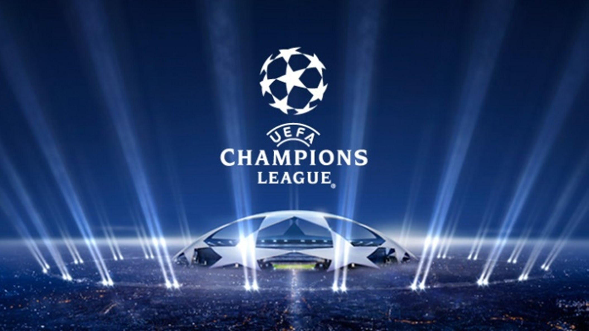
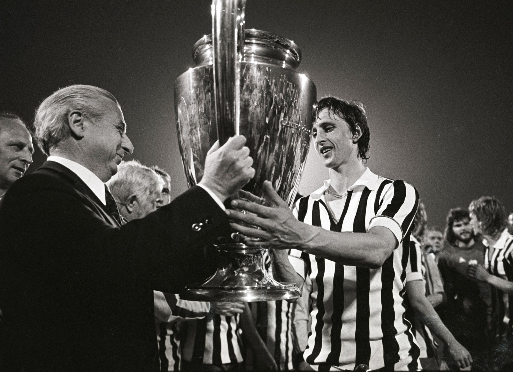
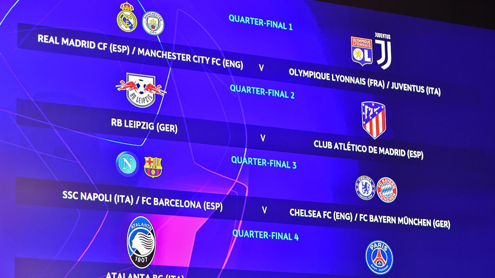

UEFA Champions League
History
The UEFA Champions League is an annual club soccer competition organized by UEFA, originating from the 1955-1956 European Cup. The tournament aimed to bring together the best European clubs to compete in a prestigious final. Real Madrid won the first five competitions. The competition expanded over time, with a group stage introduced in 1992-1993. Renamed the UEFA Champions League in 1992, it has become one of the most prestigious and watched football events worldwide. The tournament showcases Europe's best clubs competing for the coveted title, creating iconic matches and unforgettable moments that leave an unforgettable mark on football history.
Format
To identify the best club football team on the continent, the UEFA Champions League (UCL) uses a format that alternates between group stages and knockout rounds. 32 teams, split into eight groups of four, compete in the group stage of the competition. Points are awarded for victories and draws in this home-and-away round-robin style for each team. In the knockout phase, which consists of two-leg ties leading to the championship, the top two clubs from each group proceed. Round of 16, quarterfinals, semifinals, and the championship game are the knockout stages. The two finalists compete for the coveted title of UEFA Champions League winner in the single game final, which is staged in an impartial location and displays the pinnacle of elite European football talent and willpower.
Prizes
The European Champion Clubs' Cup, awarded annually to the winning team, has been in existence since 1967. Teams that won the Champions League three consecutive years or five times overall were awarded the trophy permanently. Five clubs own a version of the trophy: Real Madrid, Ajax, Bayern Munich, Milan, and Liverpool. Since 2008, the trophy has remained with UEFA, and clubs receive a replica.
In addition to the overall prestige of winning the UEFA Champions League, the financial rewards associated with the competition are substantial. The tournament has a significant prize pool, with distributions for each stage of the competition. Clubs earn revenues based on factors such as television broadcasting rights, ticket sales, and commercial partnerships. The further a team progresses in the tournament, the more lucrative the financial rewards become. For instance, reaching the group stage already guarantees a substantial sum, while progressing to the knockout stages brings even greater financial benefits. The winning team receives the largest share of the prize pool, which can significantly boost the club's financial standing.
Moreover, the victorious club gains direct entry into the following season's Champions League group stage, eliminating the need for qualification rounds. This provides a valuable opportunity for the winning team to defend their title and continue competing at the highest level of European club football. The automatic qualification ensures sustained visibility on the continental stage, allowing the club to attract top talent and enhance its global brand.
- Play-off round: €5,000,000
- Base fee for group stage: €15,640,000
- Group match victory: €2,800,000
- Group match draw: €900,000
- Round of 16: €9,600,000
- Quarter-finals: €10,600,000
- Semi-finals: €12,500,000
- Runners-up: €15,500,000
- Champions: €20,000,000
Team Records
| Club | Titles | Runner-up | Semi-finals | Quarter-finals | Round of 16 |
|---|---|---|---|---|---|
| Real Madrid | 13 | 3 | 29 | 36 | 45 |
| FC Barcelona | 5 | 3 | 16 | 21 | 26 |
| Bayern Munich | 6 | 5 | 12 | 20 | 24 |
| Liverpool FC | 6 | 3 | 12 | 18 | 27 |
| AC Milan | 7 | 4 | 11 | 17 | 27 |
| Manchester United | 3 | 2 | 8 | 19 | 30 |
Teams compete in the UEFA Champions League with the goal of breaking multiple records. Real Madrid is the team with the most titles won, and AC Milan is a club with a great history. Certain seasons are memorable, such as Barcelona's 1991–92 winning season. Dramatic comebacks, like Liverpool's 2005 final turnaround, heighten the tension in the competition. Teams who break records for consistency in the group stages include Bayern Munich and Barcelona. These accomplishments highlight the UEFA Champions League's rich and varied history, in which every side strives to make a lasting impression on European football.